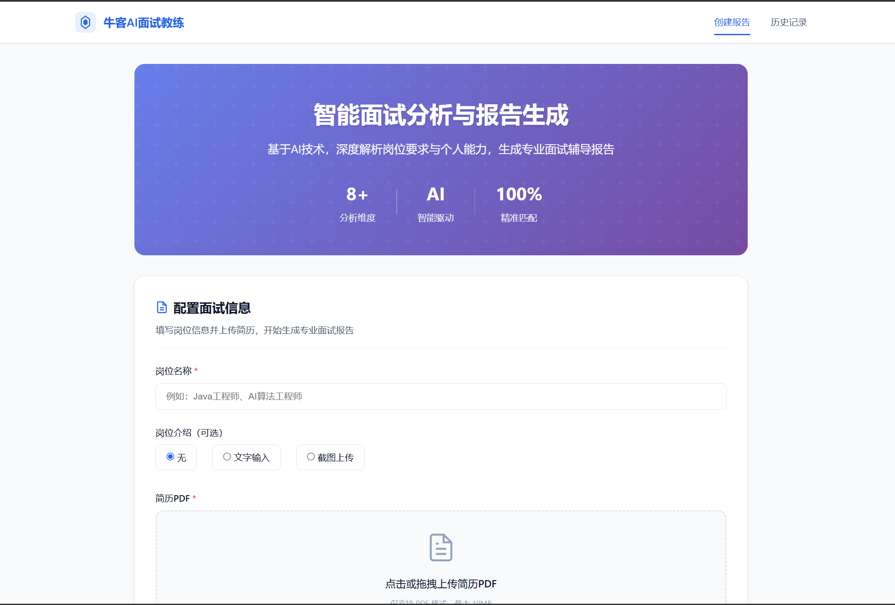
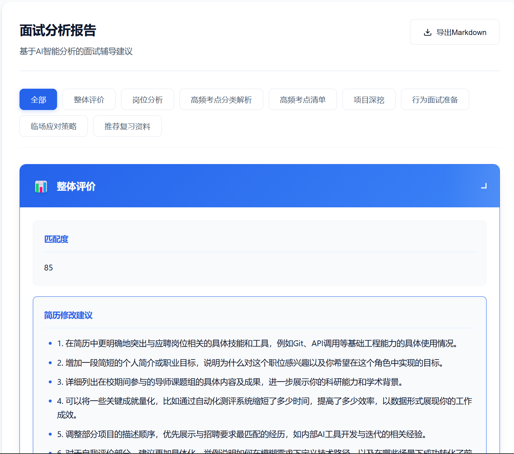

基于阿里百炼大模型的面试教练：抓取牛客面经、结构化解析简历，并结合 JD 生成可导出的个性化准备报告。初衷是减少求职准备中的重复劳动。
Web 界面

报告示例

核心能力
- 智能爬虫：抓取目标岗位面经，内置限速与反爬处理
- 简历解析：PDF 结构化提取
- JD 识别：支持文本与截图 OCR，提取岗位要求与技术栈
- 报告生成：岗位 + 简历 + 面经 → 8 大模块报告（整体评价、岗位分析、高频考点、项目深挖、行为面试等）
- 断点续传：长流程任务保存进度，支持异常恢复
- Web 界面：Flask 构建，实时进度与 Markdown 导出
技术栈
- Python · Flask · 阿里百炼 DashScope
- Requests / BeautifulSoup · PDF 解析 · OCR · 状态管理